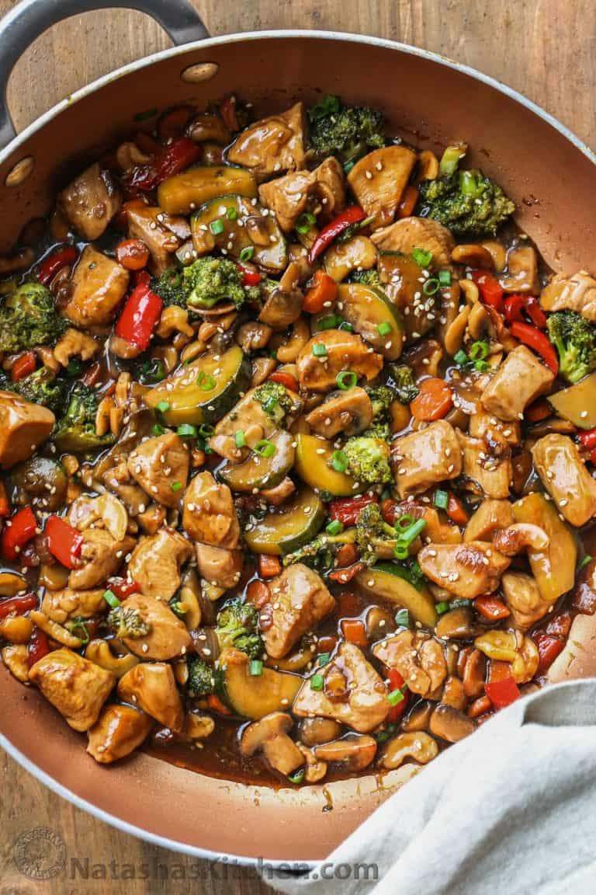
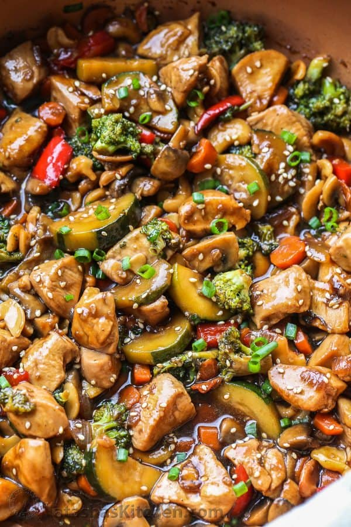
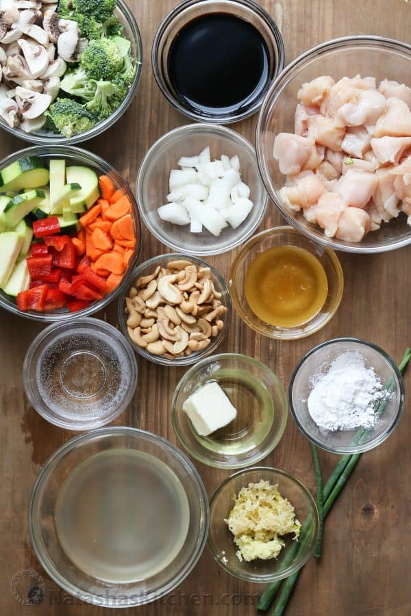
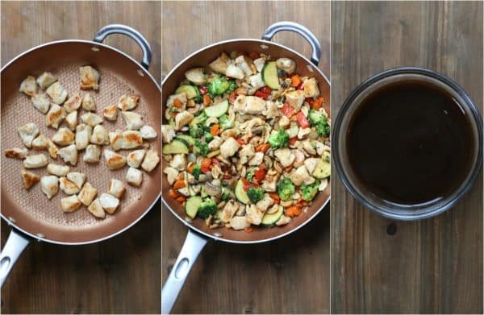
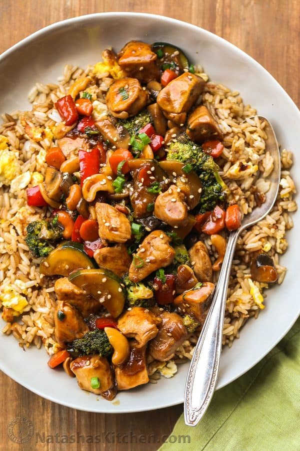

chicken_stir_fry
Chicken Stir Fry Recipe
This Chicken Stir Fry Recipe is so much better than takeout! The chicken and vegetables in a garlic ginger soy sauce with honey is the perfect balance of sweet and savory.

This stir fry is ready in under 30-minutes and is so versatile.
Hey, hey! Valentina with Valentina’s Corner sharing a delicious Chicken Stir Fry Recipe.
Chicken Stir Fry Recipe
This chicken stir fry recipe will become a staple in your home. It’s so quick to make and you can use whatever vegetables you have on hand. It tastes wonderful regardless of how you alter the ingredients.
This chicken and vegetable stir fry will become your easy go-to dinner. You will wow your guests and family alike, even the picky eaters with approve!

How Do You Make Chicken Stir Fry?
Chicken stir fry couldn’t be easier to make than this recipe.
- Cut the chicken thighs (or breast) into bite-sized pieces and cook.
- Cook vegetables until desired tenderness.
- Prepare easy sweet and savory stir fry sauce.
- Combine the chicken with the vegetables and sauce. Simmer until sauce thickens and ingredients are well incorporated.
TIP: When cutting chicken, slice into small bite-sized pieces. This will ensure the chicken is full of flavor, tender and not hard to chew.
Best Chicken for Stir Fry?
Chicken thighs tend to be more forgiving in stir fry, but you can substitute with chicken breast if you don’t have thighs on hand.

Can I Substitute Stir Fry Vegetables?
Yes, you can totally use whatever vegetables you have on hand. Here are some great options that you can use in the chicken stir fry:
- sweet peas
- asparagus
- green beans
- bell peppers
- broccoli
- mushrooms
- onions
- zucchini

What can I serve Chicken Stir Fry with?
Serve the stir fry with your favorite side. A plain fried rice, white rice or noodles will all work great as there are vegetables and protein in the stir fry already.

Chicken Stir Fry Recipe
- Prep Time: 15 minutes
- Cook Time: 15 minutes
- Total Time: 30 minutes
This Chicken Stir Fry Recipe is so much better than takeout! The chicken with vegetables smothered in a garlic and ginger soy sauce with honey is the perfect balance of sweet and savory.
- Author: Valentina Ablaev
- Skill Level: Easy
- Cost to Make: $10-$14
- Keyword: Chicken Stir Fry
-
- Cuisine: American, Asian
- Course: Main Course
- Calories: 523
- Servings: 4 servings
Ingredients
Chicken Stir Fry Ingredients:
- 1 lb chicken thighs, cut into bite-sized pieces
- 1/2 zucchini, sliced or cubed
- 2 Tbsp oil, divided
- 1 Tbsp unsalted butter
- 1 cup broccoli, cut into florets
- 1 small carrot, julienned or cubed
- 8 oz mushrooms, sliced
- 1/2 red pepper, cubed
- 4 garlic cloves, minced
- 1 tsp fresh ginger, minced
- 1/2 onion, cubed
- 1/2 cup cashews
Best Stir Fry Sauce Ingredients:
- 1/2 cup chicken broth
- 1/4 cup water
- 1/4 cup soy sauce
- 2 Tbsp honey
- 1 Tbsp cornstarch
Instructions
- Trim chicken thighs of excess fat and cut into bite-sized pieces. Cut the vegetables into even-sized pieces (about the same size as the chicken pieces).
- Combine all of the ingredients for the sauce in a bowl.
- In a large pan (or wok), on med/high heat, heat 1 Tbsp oil. Once oil is hot, add chicken in a single layer. Cook chicken until browned, mixing as needed. Once cooked, remove chicken from pan and set aside.
- Add the remaining oil and the butter to skillet with the broccoli, zucchini, mushrooms, red peppers, onion, and carrots. Cook until vegetables are crisp tender, mixing frequently.
- Add chicken back to the pan. Add the garlic and ginger and cook 1 minute, stirring frequently.
- Add the cashews then pour the sauce into the pan and bring to a boil. Turn down heat and let stir fry simmer until the sauce thickens and is well incorporated with the remaining ingredients. Garnish with green onion and sesame seed before serving if desired.